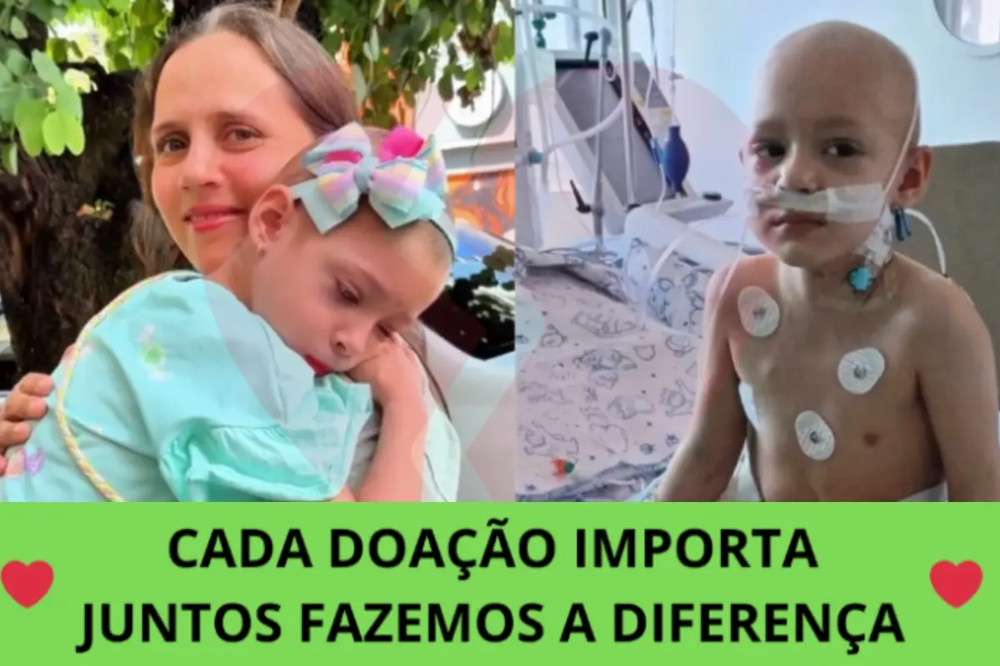

R$ 111.195,75
arrecadados de R$ 200.000,00
💔 Nenhuma criança deveria enfrentar isso — e a Heloisa enfrenta desde o primeiro ano de vida
Heloisa tem 1 ano e 8 meses e foi diagnosticada com nefroblastoma, um tumor que atinge crianças pequenas. Desde então, a vida dela virou hospital, exames e coragem.
Foram 3 cirurgias e todos os protocolos convencionais indicados para o caso dela. Mesmo assim, a Heloisa não respondeu como esperávamos e teve uma nova recidiva.
“Não há mais tratamento convencional disponível.” Ouvir isso sobre a nossa filha de 1 ano foi a frase mais difícil da nossa vida — e a razão pela qual não paramos de procurar.
1 ano e 8 meses
a idade da Heloisa
3 cirurgias
já enfrentadas por ela
R$ 200 mil
para iniciar o tratamento
🙏 Existe uma nova possibilidade em São Paulo
Encontramos em São Paulo um acompanhamento particular com uma abordagem diferente de tudo que a Heloisa já recebeu. Para nós, é a única porta que continua aberta.
O obstáculo é um só: o custo. São aproximadamente R$ 200.000 entre tratamento, deslocamento e a permanência da família em São Paulo. É um valor que nenhuma família consegue sozinha — por isso estamos pedindo ajuda.
Para onde vai a sua doação
- Tratamento particular em São PauloProtocolo indicado após o fim das opções convencionais
- Consultas, exames e medicaçõesAcompanhamento contínuo durante o protocolo
- Deslocamento e estadia da famíliaPara que a Heloisa nunca fique sozinha
❤️ Se você puder ajudar, ajude hoje
Cada doação, mesmo pequena, soma com a de milhares de pessoas e aproxima a Heloisa da primeira dose desse tratamento. Se não puder doar, compartilhe esta campanha — o compartilhamento de uma pessoa já trouxe muitos apoiadores até aqui.
2.148 pessoas já estão nessa corrente com a Heloisa
- JSJoão S.há 1 minR$ 30
Vou compartilhar para que a história da Heloisa chegue a mais pessoas. ❤️
196 curtidas - EOElena O.há 7 minR$ 60
Espero que a Heloisa consiga iniciar o tratamento e que essa família receba toda a ajuda necessária. Que Deus abençoe vocês. ❤️
219 curtidas - LSLucas S.há 21 minR$ 150
Espero que a meta seja alcançada e que a Heloisa consiga ter acesso a essa nova possibilidade de tratamento.
300 curtidas - EAElena A.há 33 minR$ 200
Que essa campanha alcance muitas pessoas e consiga ajudar a Heloisa nesse momento tão difícil. 🙏
322 curtidas - KSKarina S.há 42 minR$ 50
Muita força para a Heloisa e toda a família. Espero que consigam alcançar a meta para iniciar o tratamento.
242 curtidas